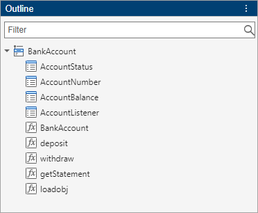

Edit and Format Code
To edit you code, in the Editor and Live Editor, you can use column selection, code autocompletion, and refactoring. To format your code and make your code easier to read, use indentation, text-width indication, code folding, and the Outline panel.
Column Selection
When adding or editing code in the Editor and Live Editor, you can select and edit a rectangular area of code (also known as column selection or block edit). If you want to copy or delete several columns of data (as opposed to rows) or if you want to edit multiple lines at one time, selecting and editing code is useful. To select a rectangular area, press the Alt key while making a selection with the mouse. On macOS systems, use the Option key instead.
For example, select the second column of data in A.

Type 0 to set all the selected values to 0.

Before R2021b: Column selection is available only in the Live Editor, not in the Editor.
Change Case
You can change the case of selected text or code from all uppercase to lowercase, or vice versa, in the Editor and Live Editor. Select the text, right-click, and select Change Case. Alternatively, you can press Ctrl+Shift+A. If the text contains uppercase and lowercase text, MATLAB® changes the case to all uppercase.
On macOS, use the Command key instead of the Ctrl key.
Before R2021b: The Change Case option is available only in the Live Editor, not in the Editor.
Duplicate and Copy Line
You can duplicate a code line in the Editor and Live Editor. To duplicate a code line, right-click the line and select Duplicate Line(s). Alternatively, you can press Ctrl+Shift+C. On macOS, use the Command key instead of the Ctrl key.
To copy a code line without selecting the code, press the Ctrl+L keyboard shortcut. To cut the code line, press Ctrl+X. On macOS, use the Command+C and Command+X keyboard shortcuts instead. (since R2025a)
Before R2021b: The Duplicate Line option is available only in the Live Editor, not in the Editor.
Automatically Complete Code
MATLAB automatically completes parentheses and quotes when entering code in
the Editor and Live Editor. For example, if you type an open parenthesis in the
Editor or Live Editor, MATLAB adds the closing parenthesis. MATLAB also automatically splits comments, character vectors, strings, and
parentheses when you press Enter. For example, if you press
Enter in a comment, MATLAB moves the text after the cursor to a new line and adds a percent
(%) symbol to the beginning of the new line.
MATLAB can also automatically complete block endings in control flow
statements and function and class definitions. To autocomplete block endings, on the
Home tab, in the Environment section,
click  Settings. Select Editor/Debugger > Suggestions and Autocompletions and in the Autocoding options section, select one
or more of the Autocomplete block endings options.
Settings. Select Editor/Debugger > Suggestions and Autocompletions and in the Autocoding options section, select one
or more of the Autocomplete block endings options.
To undo an automatic code completion, press Ctrl+Z or the Undo button. To disable all automatic code completions, in the Autocoding options section of the Editor/Debugger > Suggestions and Autocompletions settings, clear the Enable autocoding setting. Alternatively, to disable only certain automatic code completions, clear one or more of the settings in the Autocomplete pairs, Autocomplete on new line, and Autocomplete block endings sections. For more information, see Editor/Debugger Settings.
Before R2021b: MATLAB completes code only in the Live Editor, not in the Editor.
Refactor Code
You can break large scripts or functions into smaller pieces by converting selected areas of code into functions or local functions, known as code refactoring.
To refactor a selected area of code:
Select one or more lines of code.
On the Editor or Live Editor tab, in the Code section, click Refactor and select from the available options.
Enter a name for the new function. MATLAB creates a function with the selected code and replaces the original code with a call to the newly created function.
Before R2021b: Refactoring options are available only in the Live Editor, not in the Editor.
Indent Code
Indenting code makes functions and statements, such as while
loops, easier to read. By default, MATLAB automatically indents code in the Editor and Live Editor as you type.
This is called smart indenting. When you indent lines by
using tabs or spaces, MATLAB also aligns subsequent lines with those lines.
To indent selected lines of code if smart indenting is disabled, go to the
Editor or Live Editor tab and in the
Code section, click the Smart Indent
 button.
button.
To manually change the indent of selected lines to be farther right or left, on
the Editor or Live Editor tab, click the
Increase Indent  or Decrease Indent
or Decrease Indent  buttons. Manually changing the indent works
whether smart indenting is enabled or disabled. Alternatively, you can use the
Tab key or the Shift+Tab keys,
respectively.
buttons. Manually changing the indent works
whether smart indenting is enabled or disabled. Alternatively, you can use the
Tab key or the Shift+Tab keys,
respectively.
Disable Smart Indenting
If you prefer not to use smart indenting, you can disable it. Each language in MATLAB that supports smart indenting has its own setting to disable it.
On the Home tab, in the Environment section, click Settings.
Select MATLAB > Editor/Debugger > MATLAB Language or MATLAB > Editor/Debugger > Other Languages >
language name, wherelanguage nameis the programming language that you want to disable smart indenting for.Before R2025a: Select MATLAB > Editor/Debugger > Language and in the Language drop-down list, select a programming language.
In the Indenting section of the selected language, clear the Apply smart indenting while typing setting. This setting is not supported for all languages.
Change Indenting Behavior
You can change the behavior of indenting in the Editor and Live Editor.
To change how functions in MATLAB code files indent, on the Home tab, in the Environment section, click Settings. Select MATLAB > Editor/Debugger > MATLAB Language. Then, in the Indenting section, select from the Function indenting format options. For more information and examples of each function indenting format, see Editor/Debugger Settings.
To change the behavior of smart indenting, go to the MATLAB > Editor/Debugger > Indenting settings and clear or set one or more of the smart indenting settings. For more information, see Editor/Debugger Settings.
Before R2025a: To change how functions in MATLAB code files indent, select MATLAB > Editor/Debugger > Language. To change the behavior of smart indenting programmatically using
matlab.editor settings. For example, this code
enables formatting the entire document when automatically indenting. For more
information, see matlab.editor Settings.s = settings;
s.matlab.editor.indent.SmartIndentEntireDocument.PersonalValue = 1;
Fold Code
Code folding expands and collapses blocks of MATLAB code in the Editor. You can use code folding to hide code that you are not currently working on. Code folding improves the readability of a file that contains numerous functions or other blocks of code. Code folding is not supported in the Live Editor.
For example, you can fold:
Code sections
forandparforblocksFunction code
Class code
Multiline comments
To expand or collapse a block of code, click the plus or minus sign that appears to the left of the construct in the Editor. Alternatively, you can use the Ctrl+Shift+. (period) and Ctrl+. (period) keyboard shortcuts or use the code folding buttons in the View tab.
To expand or collapse all of the code in a file, place your cursor anywhere within the file, go to the View tab, and select the Expand All or Collapse All buttons. Alternatively, you can use the Ctrl+Shift+, (comma) and Ctrl+, (comma) keyboard shortcuts.
Note
If you print a file with one or more collapsed constructs, those constructs are expanded in the printed version of the file.
You can change which programming constructs can be folded and whether a programming construct is collapsed the first time that you open a MATLAB file. On the Home tab, in the Environment section, click Settings. Select Editor/Debugger > Code Folding, and then adjust the setting options.
Change the Right-Side Text Limit Indicator
By default, a light gray vertical line (rule) appears at column 75 in the Editor, indicating where a line exceeds 75 characters. You can set this text limit indicator to another value, which is useful, for example, if you want to view the code in another text editor that has a different line width limit. The right-side text limit indicator is not supported in the Live Editor.
To hide or change the appearance of the vertical line:
On the Home tab, in the Environment section, click Settings.
In the Settings window, select MATLAB > Editor/Debugger > Display.
Adjust the settings in the Right-hand text limit section.
The right-side text limit indicator is a visual cue only and does not prevent text from exceeding the limit. To wrap comment text at a specified column number automatically, go to the Home tab and in the Environment section, click Settings. Select MATLAB > Editor/Debugger > MATLAB Language, and adjust the Comment formatting settings.
Before R2025a: Select MATLAB > Editor/Debugger > Language and in the Language field, select MATLAB.
View Outline of Code
Since R2025a
In the Editor and Live Editor, you can view a high-level outline of MATLAB code files using the Outline panel. To view an outline of a file open in the Editor or Live Editor, go to the View tab, and in the Tools section, click Outline. To navigate to an area within your code file, double-click the related entry in the Outline panel.
